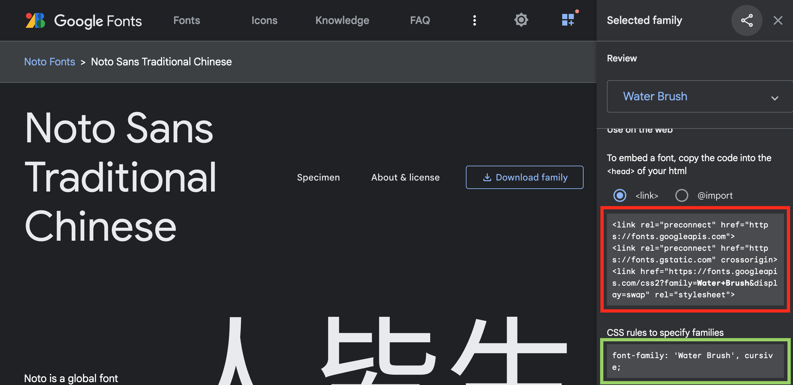
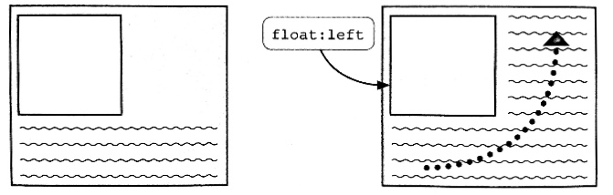
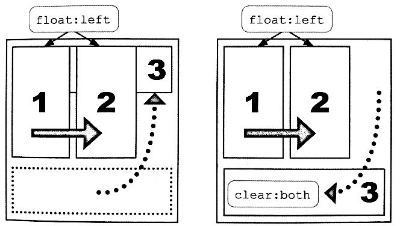
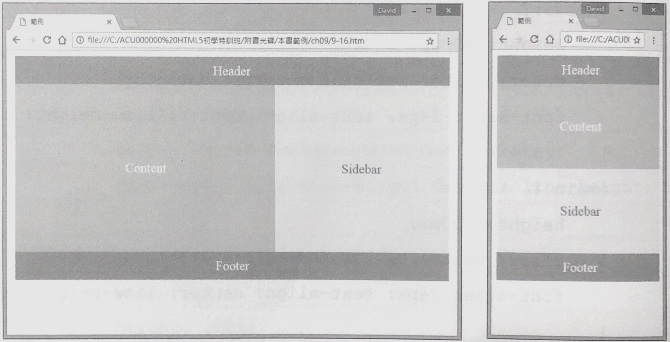

直接在HTML的標籤中設定style屬性，如此即可改變該HTML元素的樣式。如下：
<h1 style="color:#ff0000">標題文字</h1>
在HTML的<head>裡，將CSS語法設定在<style>中。如下：
<head>
<style>
h1 {color: #ff0000;}
</style>
</head>
將所有CSS樣式單獨寫在一個外部檔案中，格式為「.css」，並在HTML中載入該外部檔案即可套用該CSS樣式。
HTML可以在<head>中利用<link>或是在<style>中利用@import來載入外部樣式檔。如下：
<head>
<link href="CSS檔路徑" rel="stylesheet" type="text/css">
</head>
<head>
<style>
@import url(CSS檔路徑);
</style>
</head>
＊在CSS樣式檔裡，建議在最前面加入@charset來設定樣式檔所使用的編碼：
@charset = "UTF-8"
CSS的語法是由選擇器和宣告組成的，其中宣告包含了屬性和值，基本格式如下：
選擇器 { 屬性 : 值 ;}
選擇器是用來指定CSS的樣式要套用到HTML的哪些位置上，例如想要套用到某個元素上則該元素名稱即為選擇器名稱，
若有數個元素想要套用相同的設定，可以利用「，」來區隔。例如：
h1, h2 {color: #ff0000;}
宣告是用來設定選擇器所選的元素要使用哪種樣式設定，宣告位於大括號之間。如下：
p {
font-family: Arial;
color: #ff0000;
}
CSS的許多屬性、功能在不同瀏覽器支援度是不一樣的。許多實驗性或是針對某瀏覽器所擴充的屬性或功能，
必須在設定值前面加上前綴詞，讓瀏覽器在執行時可以依前綴詞選取適合自己的設定，例如：利用transform屬性旋轉圖片
img {
-ms-transform: rotate(45deg);
-moz-transform: rotate(45deg);
-o-transform: rotate(45deg);
-webkit-transform: rotate(45deg);
transform: rotate(45deg);
}| 前綴詞 | 瀏覽器 |
|---|---|
| -ms- | Internet Explore |
| -moz | Firefox |
| -o- | Opera(mobile、mini) |
| -webkit- | Chrome、Safari、Safari on IOS、Android browser |
全域選擇器可以選擇HTML中所有的元素，其格式為：
* { 屬性: 值 ;}
例如想要將網頁中全部的文字設為灰色，方式如下：* { color: gray;}
直接選擇HTML中的元素名稱來設定樣式，例如h1、h2、p、div等。若想將標題<h3>設為灰色，方式如下：
h3 { color: gray;}
若想將HTML中的某些元素設為相同的樣式，通常會在這些元素中增加class屬性，並設定相同的值。 如此便能以class名稱來選擇目標，並一次設定頁面中具有相同class值的元素的樣式。格式如下：
.class名稱 { 屬性: 值; }
.title {color: #0000ff;}p.content {color: #0000ff;}HTML中的id屬性具有唯一的特性，整個HTML中一個id只能使用一次。若要替某個id所指定的元素設定樣式，就可以使用id選擇器，格式如下：
#id名稱 { 屬性: 值 ;}
#topnews {color: #0000ff;}p#topnews {color: #0000ff;}CSS2之後加入了屬性選擇器，大幅增加了選擇器的彈性。以下是常用的屬性選擇器：
| 格式 | 說明及範例 |
|---|---|
| 元素[屬性] | 對設有指定屬性的元素設定CSS樣式。例如想針對設有alt屬性的<img>設定框線，方式如下：img[alt] {border: 1px solid;} |
| 元素[屬性="值"] | 對設有指定屬性和值的元素設定CSS樣式。例如想選取<a>中有屬性「href="http://www.google.com"」的元素設定文字顏色，方式如下：a[href="http://www.google.com"] {color: #ff0000;} |
| 元素[屬性~="值"] | 在設定屬性值時，有時會以半形空白隔開單字。使用「~=」代表屬性值中只要有一個單字符合即可被選取。例如：
img[alt~=logo] {border: 1px solid gray;}
...
<img src="logo.png" alt="this is logo"> |
| 元素[屬性|="值"] | 在設定屬性值時，有時會以「-」連接單字或編號。使用「|=」代表只要符合開頭文字加「-」，即可被選取。例如：
img[alt|=photo] {border: 1px solid gray;}
...
<img src="photo1.png" alt="photo-1">
<img src="photo2.png" alt="photo-2"> |
| 元素[屬性^="值"] | 對設有指定屬性，且其值開頭為指定文字的元素進行樣式設定。例如a[href^="mailto:"] {color:#0000ff;} |
| 元素[屬性$="值"] | 對設有指定屬性，且其值結尾為指定文字的元素進行樣式設定。例如img[src$=".png"] {border:1px solid black;} |
| 元素[屬性*="值"] | 對設有指定屬性，且其值內容有包含指定文字的元素進行樣式設定。例如
a[href*="google"] {color:#ff0000;}
...
<a href="http://www.google.com"> |
| 格式 | 說明及範例 |
|---|---|
| 元素:link 元素:visited |
:link代表尚未點閱的超連結元素，而:visited則是已經點閱過的超連結元素。 |
| 元素:hover 元素:active 元素:focus |
:hover代表游標滑過時的元素，而:active是被點選或按下的元素，:focus是移入焦點的元素(較常用在表單元件上)。 |
| 元素:empty | :empty代表沒有子元素或內容的元素。例如設定沒有內容的儲存格為灰色：td:empty { background-color:gray; } |
| 元素:not(選擇器) | :not()代表選擇不符合參數中的選擇氣元素。例如選擇段落中沒有設定「class="content"」的段落為紅色：p:not(.content) { color:red; } |
child就是在同一個父元素下的子元素之間選取，常見的選取方式如下：
| 格式 | 說明 |
|---|---|
| 元素:first-child | 第一個元素 |
| 元素:last-child | 最後一個元素 |
| 元素:only-child | 只有一個元素 |
| 元素:nth-child | 在相同子元素之間指定或間隔幾個元素進行選取：
|
以下為程式碼範例：
td:nth-child(1) {text-align:center;}
td:nth-child(2) {text-align:left;}
tr:nth-child(even) {background-color: rgb(247, 255, 255);}
tr:first-child {background-color: rgb(210, 217, 222);}
of-type也是在同一個父元素下的子元素之間選取，與child的差別在於：
選擇器的明確度越精確會先行套用：
全域選擇器 <- 元素選擇器 <- class選擇器 <- id選擇器
如果有需要優先套用的CSS屬性，
可以在該設定值後方加入「!important」來表示套用的最高權限。
RGB使用紅(r)、綠(g)、藍(b)三種顏色，以00~ff的16進位數來表示：
#rrggbb也可以簡化為3位數來指定顏色：
#rgb也可以用10進位來表達，但每個顏色值的範圍為0~225（也可以是百分比，n後面加上%）：
rgb(n, n, n)
RGBA是使用RGB時再最後加上透明度Alpha的設定。Alpha值的範圍是0.0~1.0之間：
rgba(n, n, n, n)
文字大小基本格式如下，其中值可以設定為絕對數值或相對數值：
font-size: 值常見的絕對數值：xx-small、x-small、small、 medium、large、x-large...等，或是以px、cm、pt等單位設定。
文字粗細的基本格式如下：
font-weight: 值文字粗細預設為「normal」，若要變粗或變細一級可以使用「bolder」、「lighter」。 若想更精確設定可以使用100~900的9個等級，但是一般字型只有2個等級的粗細設定，要視各字型的不同來使用。
文字變體指的是英文小型大寫字「Example」，其預設為「normal」，格式如下：
font-variant: normal/ small-caps
英文大小寫轉換的格式如下：
text-transform: uppercase/ lowercase/ capitalize其中「uppercase」代表都以大寫顯示、 「lowercase」代表都以小寫顯示、「capitalize」則會讓每個單字的第一個字母大寫。
使用font可以一次設定文字斜體、大型小寫字、粗細、大小、行高及字型的屬性值。格式如下：
fonr: font-style值 font-variant值 font-weight值 font-size值 /line-height值 font-family值其中font-style、font-variant、font-weight、line-height值不是必填，但有設定line-height時必須搭配font-size，並用「/」串連。
在CSS中可以直接設定欲使用的字型，但必須是系統已經安裝的字型。當「font-family」設定多個字型時瀏覽器會從左邊第一個字型優先套用，其格式如下：
font-family: Georgia, "Times New Roman", "微軟正黑體" ...需要注意的是字型名稱是中文或是有空格時須以「"」包起來。
因為系統能使用的通用字型不多，不同平台字型又不一致，因此許多供應商推出了雲端網路字型服務讓所有人瀏覽網頁時能達到一致的效果。
而Google fonts不僅字型多，使用上也不綁定網域或流量，而且還免費！點此進入Google fonts的網站

第一步 ：進入網站選擇字型後，上圖中紅框的部分可以選擇在網頁的<head>中以CSS的方式加入字型來源，如下：
<link rel="preconnect" href="https://fonts.googleapis.com"> <link rel="preconnect" href="https://fonts.gstatic.com" crossorigin> <link href="https://fonts.googleapis.com/css2?family=Water+Brush&display=swap" rel="stylesheet">或是在CSS外部檔案中使用「@import」的方式加入字型來源，如下：
@import url('https://fonts.googleapis.com/css2?family=Noto+Sans+TC&display=swap');p {font-family: 'Noto Sans TC', sans-serif;}CSS3後HTML允許使用「@font-face」來嵌入在伺服器中的字型檔案來顯示字型，目前支援的格式有：Web Open Font Format(.woff)、 True Type(.ttf)、Open Type(.otf)。使用時需要先用font-family來自定自行名稱，接著因為字型檔案是在本機或網路伺服器上， 所以要使用url()來指引字型檔案的位置，如下：
@font-face {
font-family: 自訂名稱;
src: url(字型檔案位置/檔名)
}
之後便能在CSS中使用該自訂名稱來使用該字型：p {font-family: 自訂名稱;}
元素 ：CSS將每個HTML標籤都視為一個獨立的個體， 依照其特性不同分為區塊元素與內行元素。
設定寬高尺寸常用的方法是使用px、em或百分比%。值得注意的是若使用百分比，則會根據父層容器的大小，依比例顯示。
width: 數值; height: 數值;在預設情形下，內容顯示區會隨著瀏覽器大小改變顯示範圍，而設定min/max-width(height)便能限制最小(大)能顯示到多寬(高)。但要注意， 這個區域無法限制內容的顯示，若內容太多時，還是會溢出該區域。
max-width: 數值; min-height: 數值;
上面提到當內容超過顯示區域的大小時便溢出，此時可以使用overflow來設定溢出時的顯示方式：「hidden」是隱藏，「scroll」是在內容顯示區使用捲軸。
overflow: hidden/scroll;
內距是指內容顯示區與區塊元素外框之間的距離，設定方式有四種：
padding: 4方的距離值; padding: 上下方的距離值 左右的距離值; padding: 上方的距離值 左右的距離值 下方的距離值; padding: 上方的距離值 右方的距離值 下方的距離值 左方的距離值;除此之外也可以針對單邊來設定內距：
padding-(top/right/bottom/left): 距離值;
邊界是指定外框與其他區塊元素之間的距離，設定方式也有四種：
margin: 4方的距離值; margin: 上下方的距離值 左右的距離值; margin: 上方的距離值 左右的距離值 下方的距離值; margin: 上方的距離值 右方的距離值 下方的距離值 左方的距離值;
margin-(top/right/bottom/left): 距離值;
在網頁排版時，常會需要將區塊元素置中在版面或父層容器中，此時需要做以下設定：
width: 300px;
margin: 20px auto;
float屬性能將元素設置到容器的最左或右方成為浮動元素，跟在該元素後方的內容便會像文繞圖一樣流動到剩下的位置中：

設定float屬性時必須要設定width屬性否則區塊元素的寬度可能與容器相同，就失去浮動的效果了，使用方式如下：
width: 25%; float: left/right/none;
當頁面裡的區塊元素沒有全部都設定float時，有設定的區塊元素會浮動到版面上，而未設定的區塊元素則會被覆蓋，造成版面錯位的狀況。

clear屬性可以排除左、右或同時兩側的其他元素顯示：
clear: left/right/both/none;
position能將元素精確設置到由基準點出發的相對位置。以position確定基準點後，需再加上top、right、bottom、left屬性來指定與基準點所在位置的距離 ，語法如下：
position: static/relative/absolute/fixed; top: 50px; left: 25%;
媒體查詢指的是HTML能依照輸出的裝置、螢幕大小及顏色等特性，指定套用不同的CSS樣式，如此一來便能根據不同的裝置或是螢幕大小設計適合的CSS樣式予以套用。
媒體查詢有三種使用方式：
1.直接在CSS中定義：
@media 媒體類型 and (特性) {樣式設定..}
2.在CSS中加入外部檔案：@media url("外部樣式檔") and (特性);
3.在HTML中匯入外部檔案：<link rel="stylesheet" href="外部樣式檔" media="媒體類型" and ("特性")>@media screen and (max-width: 720px) {樣式設定...}
在條件之間加上「and」即能同時指定多個特性，例如，螢幕寬度大於240px且小於720px才套用該CSS樣式：@media screen and (min-width: 240px) and (max-width: 720px) {樣式設定...}
@media screen and (min-width: 320px) {
#container {width: 800px; height: 300px; margin: 10px auto;}
#header {height: 50px; text-align:center;}
#main {width:60%; height:100%; text-align:center; line-height: 300px; float:left;}
#side {width:40%; height:100%; text-align:center; line-height: 300px; float:left;}
#foot {height: 50px; text-align:center; clear: both;}
}
@media screen and (max-width: 319px) {
#container {width: 300px; margin: 10px auto;}
#header {height: 50px; text-align:center;}
#main {height:150px; text-align:center; line-height: 150px;}
#side {height:150px; text-align:center; line-height: 150px;}
#foot {height: 50px; text-align:center;}
}
...
<div id="container">
<div id="header">Header</div>
<div id="main">Content</div>
<div id="side">Sidebar</div>
<div id="foot">Footer</div>
</div>
transform設定的變形效果包括：移動、縮放、旋轉、傾斜等，預設皆是以元素區塊的中央為基準點。
transform: translate(10px, 20px);
transform: scale(1.5, 0.5);
transform: rotate(45deg);
transform: skew(25deg, 35deg);
變形效果的預設基準點為該元素的中心，若要改變基準點可以使用transform-origin，其中屬性值的單位可以是數值或百分比：
transform-origin: 水平位置 垂直位置
transform-origin: left top;
transform: rotate(20deg);
轉換效果指的是元素由一種樣式轉換成另一種樣式的動作，可以透過以下4種屬性來設定轉換效果：
transition-duration: 播放時間
transition-property: 轉換屬性
transition-timing-function: 轉換方式
transition-delay:延遲時間
transition-duration: 0.5s;
transition-property: width;
＊註：當轉換屬性與元素屬性不同時，會直接跳過轉換動畫。例如兩個元素的寬度不同，但轉換屬性卻設定在高度，此時便會跳過轉換動畫直接跳到轉換後的狀態。
transition-timing-function: ease;
transition-delay: 0.2s;
上面四種屬性的設定可以使用transition簡化整個語法，語法如下：
transition: 播放時間 轉換屬性 轉換方式 延遲時間
＊註：設定時省略的參數會以預設值為準，若設定參數時只有一個時間即代表duration，有兩個時間時才為delay。
若需要分段執行不同的轉換效果可以利用「, 」將設定隔開，再加上延遲時間即能達到分段轉換的效果：
transition: 0.5s width , 0.5s background-color 0.5s
動畫效果可以藉由在動畫開始播放與結束播放之間設定多個關鍵影格，接著指定元素在每個關鍵影格中有不同的屬性，以此來呈現動畫效果。 之後就可以對元素設定「animation」來使用該動畫效果。最簡單的方式即是設定開始與結束的關鍵影格：
@keyframes 自訂動畫名稱 {
from {CSS設定;}
to {CSS設定;}
}@keyframes 自訂動畫名稱 {
0% {CSS設定;}
25% {CSS設定;}
50% {CSS設定;}
...
}
利用關鍵影格設置好動畫後，接著就能在元素裡指定要使用的動畫名稱，並加上其他相關設定，如下：
animation-name: 動畫名稱;
animation-duration: 動畫時間;
animation-timing-function: 動畫轉換方式;
animation-delay: 延遲時間;
animation-iteration-count: 動畫重複次數;
animation-direction: 動畫播放方向;
animation-play-state: 動畫播放狀況;
animation: 動畫名稱 動畫時間 動畫轉換方式 延遲時間 動畫重複次數 動畫播放方向 動畫播放狀況;
以下為使用動畫效果的簡單範例：
@keyframes tripping {
0% {background: repeating-radial-gradient(closest-side, red 10%, yellow 20%, green 30%, blue 40%, purple 50%);}
25% {background: repeating-radial-gradient(closest-side, yellow 10%, green 20%, blue 30%, purple 40%, red 50%);}
50% {background: repeating-radial-gradient(closest-side, green 10%, blue 20%, purple 30%, red 40%, yellow 50%);}
75% {background: repeating-radial-gradient(closest-side, blue 10%, purple 20%, red 30%, yellow 40%, green 50%);}
100% {background: repeating-radial-gradient(closest-side, purple 10%, red 20%, yellow 30%, green 40%, blue 50%);}
}
#example-animation-container {position: relative;}
#example-animation-frontdog {
position: absolute;
top: 0px;
left: 0px;
}
#example-animation-lefteye {
position: absolute;
top: 100px;
left: 52px;
width: 70px;
height: 60px;
animation: tripping 0.5s ease reverse infinite;
}
#example-animation-righteye {
position: absolute;
top: 118px;
left: 148px;
width: 70px;
height: 60px;
animation: tripping 0.5s ease reverse infinite;
}
#example-animation-front:hover {
animation: tripping 0.5s ease reverse infinite paused;
}
...
<div id="example-animation-container">
<div id="example-animation-lefteye"></div>
<div id="example-animation-righteye"></div>
<img src="img/animation_elemant.png" width="360" hieght="320" alt="tripping dog" id="example-animation-frontdog">
</div>